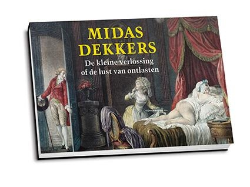

Introductie
"Als je
de manier waarop je naar dingen kijkt verandert, veranderen de
dingen waar je naar kijkt." Wayne Dyer
Er zijn twee 'soorten' mensen.
Hoofdmensen en Hartmensen. Hartmensen verschillen van Hoofdmensen in dat
zij naast, of eigenlijk: boven, de 'wereld van het hoofd' de
positieve invloed en autoriteit van het hart erkennen en nastreven.
Voor Hartmensen is het hart De Grote Baas en is het hoofd 'slechts'
de operationele manager. En ja, ik beschouw Hartmensen als evolutie
van, of zo je wilt: als 'hogere soort dan',
Hoofdmensen...
Op dit moment lijkt heel Nederland in de ban van
het boek WIJ ZIJN ONS BREIN van 'neuro-calvinist' Dick Swaab.
Inderdaad een groots werk, en dat meen ik, dat echter is gebaseerd
op aannames en, moet ik zeggen, op een geloofsovertuiging, die
neerkomt op biologisch mechanistisch determinisme. Met een beperkt,
donker en deprimerend mensbeeld als gevolg. Het boek is ook een
zoveelste uiting van een grote behoefte om 'de mens' inclusief
onszelf te begrijpen, te doorgronden maar vooral te verklaren en te
(kunnen) beheersen. Samen met o.a. Alva Noë* zeg ik echter
tegen Swaab cum suis: "er is niet iets in ons binnenste, in de
hersenen, dat voor ons denkt, voelt en ziet; (bewust)zijn, mens
zijn, is niet iets dat we ondergaan: het is iets dat we doen!" En
dan is natuurlijk meteen de hamvraag: wie is dan die 'we'? Ik noem
'we' in dit boek 'ons hart', en zeg er meteen bij dat ik zeker niet
bedoel dat wij alleen maar ons hart zijn. Maar zonder ons hart zijn
we zeker 'alleen maar ons brein'... En in dat opzicht heeft Swaab
wel een punt: steeds meer mensen lijken er voor te kiezen om
'alleen maar hun brein' te zijn.
Tijdens zijn Volkskrant-theatertournee in 2014,
bij de introductie van zijn nieuwe boek, viel Midas Dekkers mij op
zijn geheel eigen wijze bij. Dekkers: "Nederland heeft zich door neuroloog Dick Swaab
en diens bestseller 'Wij zijn ons brein' compleet in de maling
laten nemen. 'Tjongejongejonge, wat zijn jullie erin gestonken.
On-ge-lo-fe-lijk. Het leven is in essentie niks anders dan stoffen
uit de buitenwereld die onze ingewanden ingaan en transformeren tot
energie, waarna we het restant afscheiden. 'Overal in onze darmen
zitten zenuwcellen die precies weten hoe zij het beste kunnen
omgaan met binnenkomend voedsel en die direct in de gaten hebben
wanneer iets bedorven is. Dan wordt dat hatsekiedee door middel van
diarree geloosd.
'
Van de hersens gaan verschillende grote en
lange zenuwen je lichaam in om bevelen te geven aan onze darmen.
Maar wanneer die worden doorgeknipt, blijven de ingewanden het
keurig netjes doen. Volautomatisch. De darmen hebben onze hersens
absoluut niet nodig. Het is precies andersom: onze hersens kunnen
onmogelijk zonder de darmen. Regelen die de voortdurende
energietoevoer niet, dan kan ons brein het schudden. Ik zeg: wij
zijn onze darmen. Die hersens... ach, een heleboel mensen schijnen
prima zónder te kunnen" aldus Midas Dekkers.
Natuurlijk kennen we dat stukje van de
mens-puzzel, 'het hart', al heel lang. Maar we zijn het
wetenschappelijk verloren: 'de wetenschap' heeft het hart
functioneel ingedeeld in de puzzel 'mens' en ook al hebben we zeker
een hart nodig, heeft 'de wetenschap' bepaald dat niet ons hart ons
maakt tot wie we zijn... Nee, daarvoor moet je volgens diezelfde
rationele wetenschap anno 21ste eeuw in het brein zijn. In april
2014 zet de Hersenstichting Nederland op Facebook een reclametekst
voor het Omroep MAX programma 'Geef om je Hersenen' met de volgende
tekst: "Zonder hersenen ben
je niets. Ze bepalen wie je bent, wat je doet, voelt en hoe je
denkt. Fascinerend, maar ook ontzettend
kwetsbaar.", en dat zijn
de mensen die het zouden moeten weten... Alle antwoorden op de
vraag 'wat maakt ons mens?' worden overwegend alleen nog maar
gezocht in dat brein, in die hersenen. Mede omdat het brein het
enige orgaan is dat wij (nog) niet kunnen transplanteren, zo is een
argument, moet het antwoord uitsluitend daar gezocht
worden... Het brein is de lantaarnpaal van Swaab's c.s.
geworden:
Tijdens zijn nachtelijke ronde ziet een
politieagent een dom blondje onder een lantaarnpaal zoeken. Hij
vraagt haar waarnaar ze op zoek is. "Mijn sleutelbos, agent",
antwoordt het meisje. "Waar ben je die precies verloren?", vraagt
de agent. Het domme blondje vertelt hem: "Verderop, in de buurt van
de fontein." "Waarom zoek je dan hier onder de lantaarnpaal?", wil
de agent weten. "Nogal logisch," zegt het blondje, "hier is toch
veel meer licht?!"
Intussen onthult dezelfde technologie die de
neurowetenschappers inzetten om hun vooringenomen overtuigingen en
dogma's te 'bewijzen', dat die oude Egyptenaren vroeger gelijk
hadden, en de Aziaten nu nog steeds, en alle gewone
mensen-zoals-u-en-ik in onze ervaring, dat het hart het werkelijke
centrum (hart) van elk levend wezen is, en dus ook van de mens...
De technologie onthult neurocellen van het hart die samen ook wel
'het hartbrein' worden genoemd; de uitstraling van een
elektromagnetisch veld van het hart dat meer dan 60 keer groter is
dan dat van het hele brein; de magnetische component van het hart
die ruim 5000 keer groter is dan die van de hersenen... De
'mainstream' wetenschap kan er niets mee omdat het niet in hun
huidige vooringenomen hersenkundige modellen, hun paradigma,
past.
Dit boek is niet alleen een weergave van de
consequenties van die nieuwste ontdekkingen over het hart. Het gaat
mij er vooral ook om het hart de plek terug te geven die het hart
al duizenden jaren had, en op bepaalde plaatsen in de wereld nog
steeds heeft; het herstellen van de rechtmatige plek van het hart
in de hiërarchie van elk levend wezen en dus ook van het
mens-zijn. En dat heeft ook enorme gevolgen voor hoe we tegen
bepaalde zaken aankijken, zoals tegen hersenkunde. Er is niets mis
met hersenkunde zo lang het verbonden is en blijft met alle andere
'kunden'. Ook daar zal dit boek een boekje over open doen. Leonardo
da Vinci zei het als volgt: "Leer hoe je moet kijken. Realiseer je dat
alles met al het andere is verbonden." En zo is het.
Wij zijn ons Hart brengt een simpele boodschap over herstel
van de juiste verhouding tussen de hersenen en het hart. En ja, nu
we zelfs wetenschappelijke bewijzen hebben voor het belang van ons
hart in het geheel van wie wij kunnen(!) zijn, en wetenschappelijk
hebben aangetoond dat bijvoorbeeld (wat we) bewust denken grote
veranderingen in ons lichaam, tot zelfs in ons DNA**, veroorzaakt,
is de stelling 'wij zijn ons brein', en het hart daar geheel buiten
houden, slechts houdbaar voor de 'hartelozen' onder de
mensen...
Een van de belangrijke inzichten die Anneke van
der Plaats in haar lezingen over 'de wondere wereld van de
dementie' deelt is dat wij
allemaal denken dat we allemaal hetzelfde brein hebben; dat we
allemaal op dezelfde manier denken. En dat klopt minstens op het
niveau dat de meeste mensen daar nooit over nadenken. Ze nemen dat
jouw-brein-is-mijn-brein klakkeloos aan. De nuance is dat dit
vooral een aangeleerde aanname is en dat er daar tegenover vele
professionals zijn, bijvoorbeeld in de reclame en in de politiek,
die juist heel precies weten hoe je zoveel mogelijk verschillende
mensen toch zoveel mogelijk hetzelfde kunt laten denken, beperkt
tot het denken-in-het-hoofd...
Met dit boek wil ik het grotere plaatje van wie
wij kunnen zijn neerzetten: het lichaam, de hersenen, het hart
én de eigenaar daarvan. En hoe deze zich tot elkaar verhouden.
Simpel. Ik schrijf vooral voor wie nog niet intuïtief
aanvoelen dat de eenzijdige en zelf vervullende profetie van 'wij
zijn ons brein' en de beperking daarbij tot onze hersenen inderdaad
nooit het hele verhaal kán zijn, en voor wie ambieert om de
innerlijke wijsheid te hervinden om het defaitisme in dat
eenzijdige plaatje als illusie te doorzien. En voor wie de pijn van
de harteloosheid van het mechanische mensbeeld ervaart en voor wie
de verering van het brein als oorzaak én gevolg van het
mens-zijn tegen de borst stuit.
Met het Hartmens™ model dat in dit boek
wordt geïntroduceerd kunnen Hoofdmensen én Hartmensen op
een pijnlijk duidelijke manier hun verschillende keuzes maken. In
de zorg, in het werkgeverschap en in de manier waarop
'organisaties' naar mensen willen kijken. In overheid én in
burgerschap; in politiek. In alles wat je zelf of iemand anders
doet kan het Hartmens™ model helpen die keuzes en dat gedrag
te begrijpen; te plaatsen of zelfs te beteren. En vooral ook hoop
ik dat het Hartmens™ model troost én nieuwe kansen kan
bieden voor mensen. Bijvoorbeeld omdat iemand die dement wordt en
wiens hersenen niet meer goed werken daardoor niet minder mens is
geworden omdat een goed
hart nooit dement wordt.
En dát hart is die mens, wat wij in ons eigen hart ook wel
weten.
_____________________________________________
*Amva Noë, Wetenschapper, Filosoof,
hoogleraar Neuroscience Berkeley University
(California)
** Epigenetics